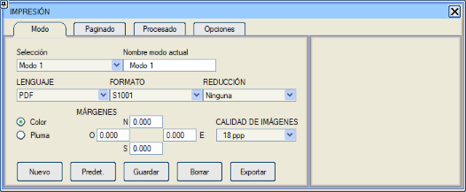
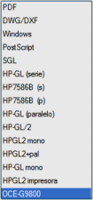
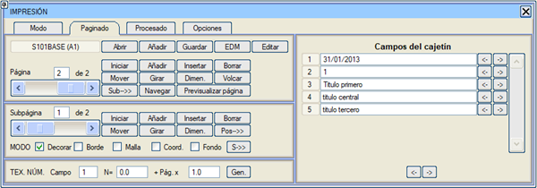
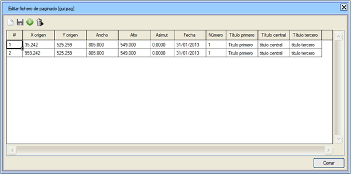
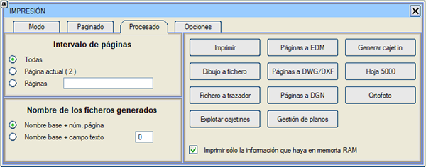
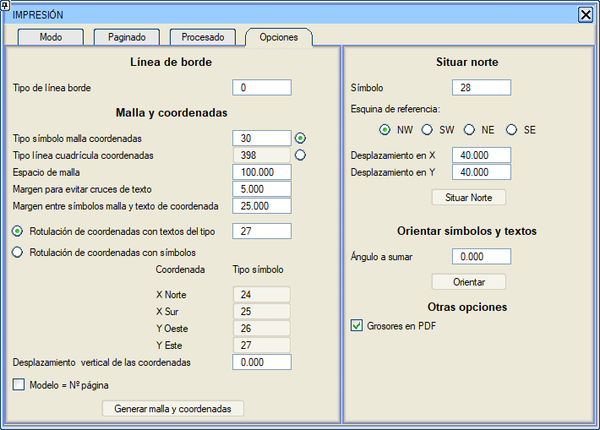
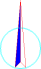

| |
|
PAFTA YAZDIRMA VE YAYINLAMA
|
|
Genel Bilgiler Pafta Formatları Yazdırma Modları Paftalama Tanımı Yazdırma İşlemi Yazdırma Seçenekleri Genel Bilgiler ISTRAM®/ISPOL®'de pafta yazdırma ile ilgili tüm unsurlar, YAZDIRMA menüsünde gruplandırılarak sürecin tüm aşamalarını kapsayan hızlı ve pratik bir çözüm sunulmaya çalışılmıştır. Dosya → Yazdır... menüsünden veya standart araç çubuğundaki  simgesine tıklanarak erişilen bu menüde, yazdırma işlemi için izlenmesi gereken üç adım, sekmeli bir iletişim kutusu şeklinde ayırt edilebilir: simgesine tıklanarak erişilen bu menüde, yazdırma işlemi için izlenmesi gereken üç adım, sekmeli bir iletişim kutusu şeklinde ayırt edilebilir:

Pafta Formatları Pafta, yazıcıda veya çizicide ölçeğinde ve istendiği zaman antet içeren bir dış çerçeve ile çizdirilebilir. Bu çerçeve veya antet, S100* ila S105* arası izole nokta sembolleri ile tanımlanır; burada * bir karakter setini temsil eder ve S100* A0 formatları için, S101* A1 için,... ve S105* A5 ve diğer standart dışı boyutlar içindir. S100* ila S105* sembolleri, diğer herhangi bir sembol gibi haritaya yerleştirilebilir. Bu durumda çizimin bir parçası olurlar ve harita ile birlikte .edm/.edb dosyalarına kaydedilirler. Ancak, YAZDIRMA menüsünden kullanıldıklarında farklı davranırlar, çünkü kütüphanedeki diğerlerinden iki açıdan ayrılırlar:
Ekranda bir harita üzerine bir çerçeve konulup bir yazdırma işlemi başlatıldığında, ISTRAM®/ISPOL® haritayı sayfa kenarlarından keser ve sadece içinde bulunan çizim parçasını, ekranda göründüğü gibi, çerçeve çizimiyle çevrili olarak gönderir. Eğer haritanın bir kısmı antetin üzerine gelirse, bu şekilde elde edilir, dolayısıyla sadece çerçeveden daha küçük boyutlu bir harita düzgün bir şekilde çizilecektir. Eğer bir harita bir sayfadan daha büyükse ve çiziciden birden fazla sayfa veya pafta elde edilmek isteniyorsa, paftalama düzenleme menüsüne başvurulabilir. Bir paftanın ölçekli olabilmesi için, boyutlarını milimetre cinsinden kağıt üzerinde tanımlayan bir format veya çerçeve içinde yer alması gerekir. Bununla birlikte, ISTRAM®/ISPOL®, ekranda o an bulunan harita parçasının serbest ölçekli paftalarını elde etmeye de olanak tanır. Yazdırma Modları Bir ISTRAM®/ISPOL® yazdırma modu veya profili, olası bir yazdırma sürecini yapılandırmaya yönelik bir parametreler setidir ve tanımı YAZDIRMA menüsü iletişim kutusunun [Mod] sekmesi aracılığıyla yapılır. Bir yazdırma modunda yer alan parametreler aşağıda detaylandırılmıştır: Seçim açılır listesinden kullanılacak yazdırma modu (bir isimle ilişkilidir) seçilir ve ardından tüm iletişim kutusu o modla ilişkili tercihlerle doldurulur. Eğer hiç yazdırma modu yoksa, [Yeni] butonuna basarak bir tane oluşturmak ve uygun tercihleri seçtikten sonra, yeni modun gelecekteki çalışma oturumlarında kullanılabilir olması için [Kaydet]'e basmak mümkündür. Ayrıca, yazdırma modu başka projelerde veya başka kullanıcılar tarafından kullanılmak üzere [Dışa Aktar]ılabilir ve [İçe Aktar]ılabilir. Mevcut yazdırma modunu varsayılan mod olarak ayarlamak istenirse, [Varsayılan] butonuna basılır. Böylece, her çalışma oturumunda yazdırma menüsüne ilk kez erişildiğinde varsayılan yazdırma modu yüklenir, ancak aynı oturum içinde menüye sonraki erişimlerde son kullanılan mod yüklenir. [Sil] butonu mevcut yazdırma modunu siler. Eğer zaten kaydedilmiş bir mod ise, kütüphaneden silinir; eğer [Yeni] butonuna basıldıktan sonra yapılandırılan bir mod ise, işlem iptal edilir. Bir yazdırma modu silindiğinde, varsayılan mod yüklenir.
ÇIKTI DİLİ açılır listesinden, paftaların yazdırılacağı dil seçilebilir. Yazdırma hem doğrudan kağıda hem de dijital formata olabilir. Mevcut en yaygın diller şunlardır:
Oluşturulan .pdf dosyası, her sayfa birden çok alt sayfadan oluşsa veya şeffaflık içeren resimler veya resim içeren semboller olsa bile, resimleri PDF dilinde içerecektir. Bu formatta yazdırırken, program tüm sayfaları tek bir dosyada veya ayrı ayrı yazdırma imkanı ve ayrıca dosyanın açılmasını bir şifre ile koruma seçeneği sunar.
Bu dil, ekranda uygulanabildiği gibi modellere göre soluklaştırma olasılığını da içerir.
Geri kalan diller eski çizicilere karşılık gelir:
Ek olarak, HPGL/2 dili için bu menüde aşağıdaki seçenekler ayarlanabilir:
FORMAT'tan, mevcut yazdırma modu için kullanılacak antet veya çerçeve tipi belirtilir ve kütüphanelerde saklanan herhangi biri seçilebilir. BOYUTLANDIRMA, çizim dosyalarını önceden belirtilen formattan farklı bir boyutta elde etmeyi sağlar. Örneğin, A1 boyutunda bir antet kullanılırsa, çizim dosyaları doğrudan A1'de veya bu seçeneği kullanarak farklı boyutlarda (örneğin, A3'e bir küçültme belirtilirse boyutları %50 oranında küçültülür) oluşturulabilir. Bu açılır listede sunulan seçenekler şunlardır:
Renk/Kalem seçeneği, çizim dosyalarının oluşturulacağı renk setini belirtmeyi sağlar. İki alternatiften biri seçildiğinde, çizim ekranda yazdırılacağı renklerle aynı şekilde görüntülenir. Bu seçenek doğrudan ekran/kağıt görüntüleme modları ile ilişkilidir. KENAR BOŞLUKLARI, kağıdın kenarına kadar çizebilen çiziciler için oluşturulmuş formatları, kenara kadar çizemeyen tek yapraklı yazıcılarda kullanmayı mümkün kılar. Yazıcının çizebildiği, sayfanın fiziksel kenarına olan mesafeleri, formatın Kuzey, Güney, Batı ve Doğu'suna göre milimetre cinsinden tanımlamayı sağlar. Son olarak, RESİM KALİTESİ'ni dpi (inç başına nokta) cinsinden belirtmek gerekecektir. Bu işlevsellik, projenin ilk aşamalarında düşük boyutlu .pdf dosyaları elde etmeyi sağlar, bu da beraberinde getirdiği tüm avantajlarla birlikte: daha küçük dosya boyutu ve daha hızlı e-posta gönderimleri, ayrıca daha hızlı açılma hızı. Paftalama Tanımı Yazdırma modları sekmesinden bir format yüklemek ve her seferinde tek bir sayfa çerçevelemek mümkündür. [Paftalama] sekmesi aracılığıyla birden fazla sayfa veya pafta elde etmek mümkün olacaktır. Bu sekme, "Hiçbiri" dışında bir yazdırma modu seçilmediği sürece devre dışı kalacaktır, çünkü aksi takdirde yüklenmiş bir format olmayacaktır. Burada bir paftalama şablonu, yani tek bir işlemde çizici dosyalarına gönderilecek tam bir sayfa (pafta) setinin dağılımını ve konumunu içeren bir dosya (.pag) oluşturulabilir. Her bir pafta, sırayla ekranın farklı bölgelerinden alınmış bir dizi alt sayfadan oluşabilir (örneğin, bir boyuna kesit ve ilgili plan). Bunu alt sayfalar aracılığıyla yapmak, planın bölümlerini boyuna kesit üzerine kopyalama zorunluluğunu ortadan kaldırır. Bir .pag paftalama dosyası şu tanımları içerir:
Sayfalar, paftalama yazdırılırken her sayfa için bir tane olmak üzere çizici dosyaları oluşturmak için kesilecektir. Her sayfa veya alt sayfa her zaman dikdörtgen şeklinde harita parçalarıdır. ISTRAM®/ISPOL® her paftayı sonunda çizilmiş çerçeve ile oluşturur. Bu, çerçevede haritanın dahil edileceği alanın bir parçasını "kapatan" doldurulmuş dikdörtgenler olmasını sağlar. Bu kapatılmış alanlara lejantlar, özet haritalar vb. yerleştirilebilir. Haritanın bir parçasını çerçeve sembolündeki bir dolgu ile kapatma olanakları eski kalemli çizicilerde etkili değildir. Sayfa Seçenekleri Bu sekmeden pafta yönetimıyla ilgili tüm seçenekler kontrol edilir: 
Otomatik olarak oluşturulmuş bir .pag paftalama dosyası kullanılmak isteniyorsa, [Aç] butonuna basıp dosyayı seçmek yeterlidir. Bir paftalama dosyasının, tüm nitelikleriyle birlikte alt sayfaları da içerdiği unutulmamalıdır. Sayfa olarak kapalı dikdörtgenler içeren bir .edm dosyası varsa, bu dosyayı doğrudan [EDM] seçeneği ile paftalama dosyası olarak yüklemek mümkündür. Bir paftalama dosyasını Düzenle seçeneği, sayfaların verilerini (konum, açı, ...), sayfa eklemeyi veya silmeyi kolayca değiştirmemizi ve bu değişiklikleri paftalama dosyasına kaydetmemizi sağlar. 
Önceki seçenekler, düzenlemedeki paftalamayı yüklenecek olanla değiştirir. Eğer paftalamanın sonuna eklemek isteniyorsa, [Ekle] seçeneği kullanılmalıdır. [Kaydet] seçeneği, düzenlenmekte olan paftalamadan .pag dosyaları oluşturur. PAFTALAMA SEÇENEKLERİ Sayfa yönetimi ile ilgili olarak, aşağıdaki seçenekler mevcuttur:
Bu seçenek ayrıca, yazdırma seçeneklerinde tanımlanan metin tipini kullanarak her sayfaya/alt sayfaya numaralarını yazdırmayı da sağlar.
Alt paftalama seçenekleri ile ilgili olarak:
ÇİZİM MODLARI Mevcut sayfada alt sayfalar olduğunda, çizim modları mevcut alt sayfaya atıfta bulunur. Alt sayfa yoksa, mevcut sayfaya atıfta bulunurlar. Detaylı Gösterim kutucuğu işaretlendiğinde, oluşturulan paftalar bu modda elde edilir. Aksi takdirde, paftalar Basit Gösterim moduna özgü basitleştirilmiş grafik gösterime sahip olur. Kenarlık seçeneği, paftayı paftalama sırasında kesildiği çizgi boyunca çevreleyen dikdörtgen bir çerçeve oluşturur. Bu seçenek etkinleştirilirse, bu çizgi haritanın sahip olduğu çizime, paftalama yapılan antete ek olarak eklenir. Kullanılan çizgi tipi, yazdırma seçeneklerinde yapılandırılan tip olacaktır. Koordinat Grid'i etkinleştirildiğinde, plan paftalarına bir koordinat grid'i eklenir. Bunun için, haritanın her 100 milimetresinde, tam sayıya yuvarlanmış katlı koordinatlarda S30 sembolü (veya yazdırma seçeneklerinde belirlenen sembol) kullanılır. Eğer Koord. seçeneği işaretlenirse, paftalama işlemi sayfanın kesim dikdörtgenini, yazdırma seçeneklerinde belirlenen stile göre (varsayılan olarak R27, ancak metinler yerine etiketlerin kullanılması da belirtilebilir) yazılmış koordinat etiketleriyle çevreler. Bu koordinatlar, kenarlara değil, çevresel grid sembollerine karşılık gelir. Paftalama yapılandırma menüsünde, grid sembolleri ile koordinat metinleri arasındaki kenar boşluğu değerleri de ayarlanır. Alt sayfa olmadığında, modları iletme seçeneği [S-->>]'dir, bu da mevcut sayfanın çizim modunu sonraki tüm sayfalara uygular. Alt sayfalar olduğunda, buton [A-->>] olarak değişir ve modları mevcut olanla aynı sıradaki alt sayfaya (eğer varsa) sonraki sayfalarda iletmekle görevlidir. Bir .pag dosyası çizim modları hakkında bilgi içermiyorsa, varsayılan değerler dikkate alınır (Detaylı Gösterim seçeneği etkin ve Kenarlık, Grid ve Koord. devre dışı). METİN ALANLARI METİN.NO. bölümü, istenen metin alanını sayfa numarasından elde edilen sayısal bir değerle doldurmayı sağlar; belirtilen alanı N = N0 + Sayfa x N1 formülüyle doldurur, burada Sayfa sayfa numarasıdır. [Oluştur] butonuna basıldığında, mevcut ve sonraki sayfalara etki eder. Sağdaki tabloda, her sayfa için "değişken içerikli" metin alanları tamamen serbestçe düzenlenebilir. Her alanın sağında bulunan [<-] ve [->] tuşları, mevcut sayfanın metnini sırasıyla önceki veya sonraki tüm sayfalara kopyalamakla görevlidir. Ayrıca, değişken metinlerin düzenleme alanlarının altında, çok sayıda alan olması ve hepsinin kopyalanması istenmesi durumunda, tüm metinleri tek seferde kopyalamak için iki buton bulunur. Bir yeniden çizim yapıldığında, mevcut sayfa (veya onun 1 numaralı alt sayfası) değişken metinlerinin içeriği dahil olmak üzere tam antet ile çizilir. Kullanıcıya, değişken metinlerin, antetin # (diyez) karakteriyle başlayan yazıları olduğu hatırlatılır. Yazdırma İşlemi [İŞLEME] sekmesi aracılığıyla erişilen menü, belirli bir formattaki dosyalara veya bir yazıcıya ya da çiziciye herhangi bir yazdırma sürecini başlatmak için gerekli işlevselliği kapsar. Bu menüyü oluşturan seçenekler şunlardır: 
[Yazdır] seçeneği ile, ilgili çizici dosyalarını oluşturmak için bir paftalama kullanılır. Genellikle o anda düzenlenmekte olan paftalama kullanılır. Aksine, sadece bir format yüklenmiş ancak düzenlemede bir paftalama yoksa, program işlemi gerçekleştirmek için mevcut bir paftalama dosyası (.pag) ister. Ardından, paftalama dosyasıyla ilişkili antet, yazdırma modunda belirtilenden farklıysa veya hiçbiri bildirilmemişse, bu anteti yükleme veya aksine yazdırma modundakini koruma imkanı sunan bir mesaj görüntülenir. Eğer Sadece RAM bellekteki bilgiyi yazdır kutucuğu devre dışı bırakılırsa, program RAM'deki tüm bilgiyi boşaltır ve her sayfayı yazdırırken diskteki yedek kopyadan o sayfaya karşılık gelen bölgeyi yeniden yükler, sonunda RAM bellekte son sayfaya karşılık gelen bölge kalır. Belirli bilgisayarlarda ve büyük hacimli harita ve sayfa için, bu seçeneği devre dışı bırakmak daha verimli olabilir. Ardından, yazdırma bir formata yapılacaksa oluşturulacak dosyanın adı veya eğer yazdırma dili olarak bu seçilmişse Windows yazdırma kontrol penceresi istenir. İkinci durumda, bu pencere her sayfa için bir kez görünür ve dosya oluşturma durumunda, her sayfa için bir dosya oluşturulacağından (isteğe bağlı olan .pdf dosyaları hariç), girilen ad tüm dosyalar için ortak olan adın bir parçası olacaktır. Dosyaların adının değişken kısmı, bu menünün Oluşturulan dosyaların adı bölümünde belirtilenlere göre aşağıdaki kurallara göre oluşturulur:
Dosyaların oluşturulacağı sayfa setini kısıtlamak istenirse, menünün Sayfa Aralığı bölümüne başvurulabilir, bu bölüm aşağıdaki seçenekleri içerir:
[Dosyayı Çiziciye Gönder] seçeneği, bir çizici komut dosyasını doğrudan çiziciye veya yazıcıya göndermeyi sağlar. Ardından, yüklü yazıcıların bir listesiyle bir diyalog sunulur. Bunlardan birini seçerek, yazdırma komut dosyaları, yerel, ağ vb. bir yazıcı olmasına bakılmaksızın ona gönderilir. [Paftaları EDM'ye Aktar] ile, her biri şunları içeren bir dizi .edm dosyası oluşturulabilir:
Referans olarak alınan alt sayfa, Grid veya Koord. seçeneğinin etkin olduğu ilk alt sayfadır (genellikle harita). Bu nedenle, geri kalan alt sayfalar gerçek koordinatlarını kaybeder. Hiçbir alt sayfanın belirtilen iki seçenekten herhangi biri etkin değilse, referans olarak alt sayfa 1 alınır. [Yazdır] seçeneğinde olduğu gibi, oluşturulan dosyaların seti ve adları sırasıyla Sayfa Aralığı ve Oluşturulan Dosyaların Adı bölümlerinden kontrol edilebilir. [Paftaları DWG/DXF'e Aktar] işlevi, daha önce açıklanan [Paftaları EDM'ye Aktar] işlevine benzerdir ve sonuç olarak her biri şunları içeren bir dizi .dxf/.dwg dosyası elde edilir:
Bunun dışında, alt sayfaların dahil edilmesi ve sonuç dosyalarının oluşturulması seçenekleri açısından, işleyiş önceki seçenekle aynıdır. [Paftaları DGN'e Aktar] ile, önceki seçeneklere benzer şekilde bir dizi .dgn dosyası oluşturulur. Her dosya şunları içerir:
Antetleri Patlat: Antet sembolünde (S10...) bulunan çizgileri ve sembolleri, ekranda detaylı gösterim modunda görüntülenen bireysel nesneler olarak oluşturur. Bunlar, harita nesneleri olduğu için .edm olarak kaydedilebilir. Yazdırma Seçenekleri Seçenekler sekmesi, paftalama çizim modunda kullanılacak yapılandırmayı içerir. Ayrıca EDM'de koordinat grid'i oluşturmaya, kuzey okunu yerleştirmeye, sembolleri ve yazıları yönlendirmeye vb. olanak tanır. 
Kenarlık Çizgisi Burada, çizilebilir alanın kenarlığını çizmek için kullanılacak çizgi tipi beyan edilir (varsayılan L0). Bu çizgi, paftalama çizim modlarında Kenarlık seçeneği etkinleştirildiğinde çizilir. Grid ve Koordinatlar Burada aşağıdaki seçenekler yapılandırılır:
Grid sembolleri ile koordinat metni arasındaki kenar boşluğu seçeneği, haç kollarının uzunluğu artı koordinat metninin kaplayabileceği uzunluktan büyük veya eşit olmalıdır, çünkü bu şekilde koordinat metinlerinin çakışması düzeltilir. Varsayılan olarak, bu değer 25 olarak ayarlanmıştır.
Son olarak, metin kesişmelerini önlemek için kenar boşluğu seçeneği, grid sembolü ile koordinat metinleri arasındaki mesafeyi ayarlar, böylece düzeltme tamamlanır. Varsayılan olarak bu kenar boşluğu 5 değerini alır.
Kuzey Oku Yerleştir [Kuzey Oku Yerleştir] butonuna basıldığında, harita içeren sayfaların/alt sayfaların belirtilen köşesinde (KB, GB, KD, GD ve öteleme dikkate alınarak) belirtilen sembol (varsayılan olarak S28) oluşturulur. Sembole, belirtilen referans köşesine göre bir X Yönünde Öteleme ve bir de Y Yönünde Öteleme uygulanabilir. Sembolleri ve Yazıları Yönlendir [Yönlendir] butonuna basıldığında, aktif tiplere ve modellere ait tüm semboller ve yazılar, içinde bulundukları sayfa veya alt sayfanın yönelimine artı burada belirtilen açı artışına göre yönlendirilir. Diğer Seçenekler Burada, çizgilerin kalınlıkları dikkate alınarak yazdırma etkinleştirilebilir. |